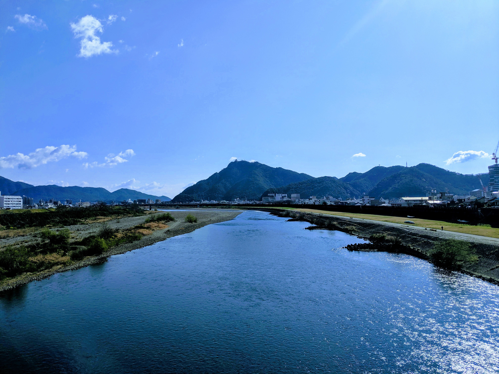
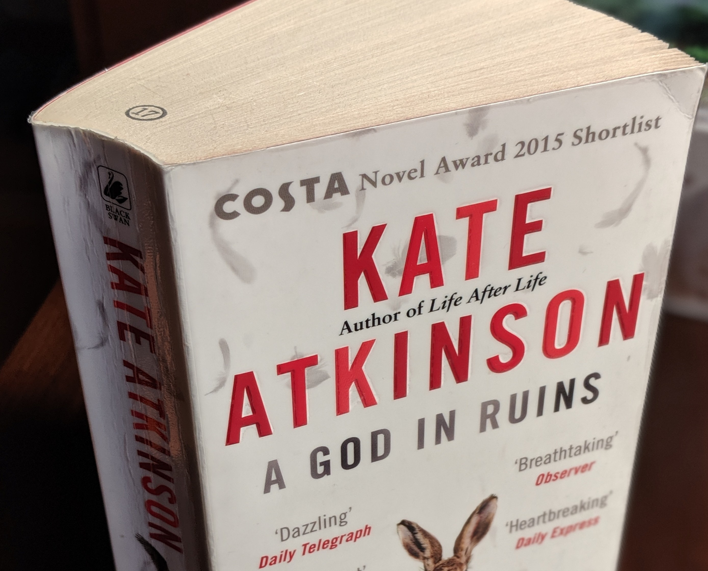
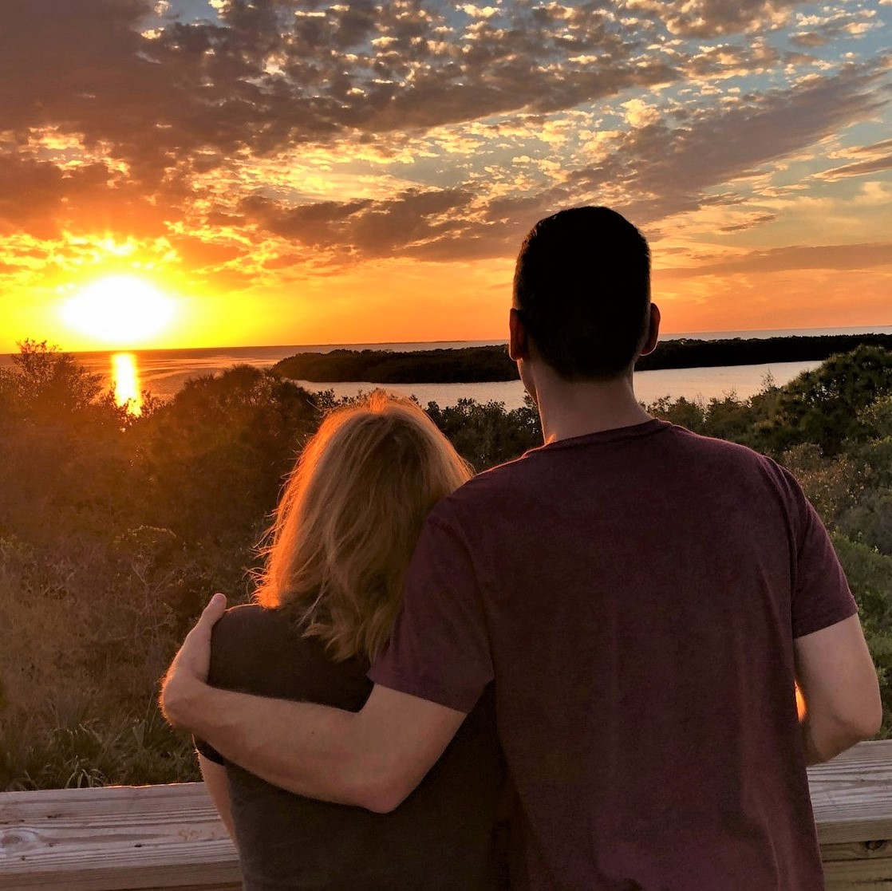
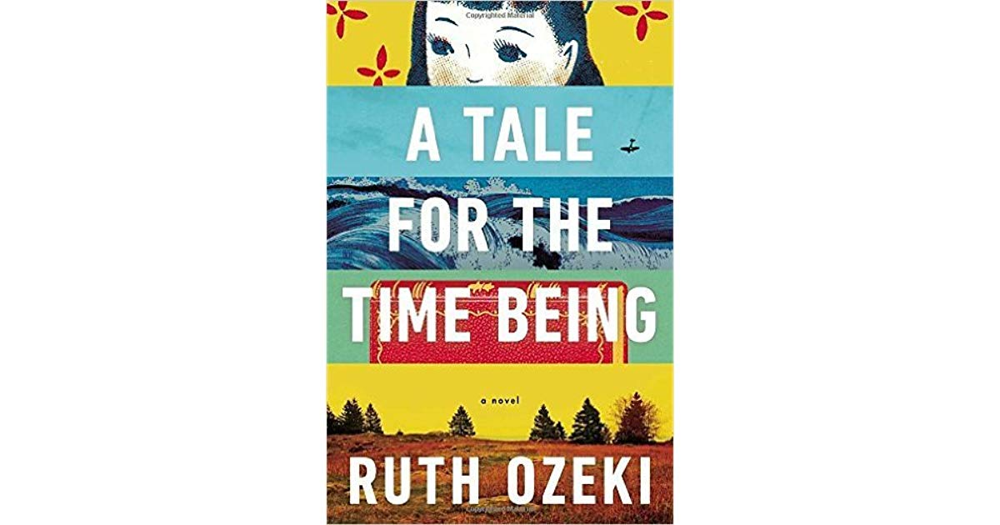
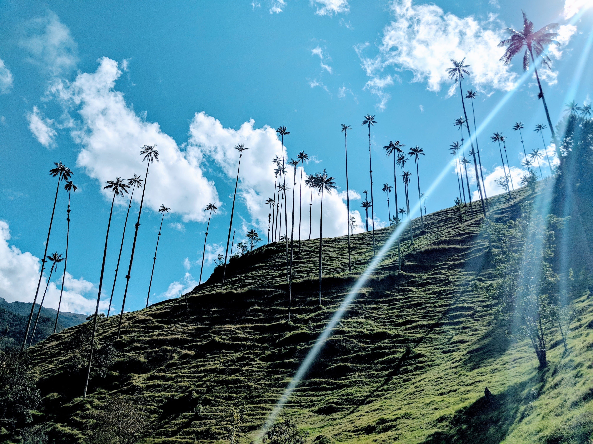

さよなら,岐阜市
早すぎたさよならって言わされますね。今年この都市は僕の美しい場所でした。もう一年間終わりたけどアメリカに帰ることがまあまあ感じます。最後の金華山を見る時には泣きたかったのでその山はまだ僕の心に住んでいる。すぐ戻りますって言いたいけどそれは夢だけだ。うそだ。そしたら未来に向けます。今から岐阜とその思い出が僕の過去になります。
But in the midst of the mad dash to get home, all I could feel was stress. The slow descent into the bittersweet territory of grandiose goodbyes came to an abrupt halt when I learned I’d be leaving a week early. No time for proper partings or prepared passing during a pandemic. I needed to keep the emotional reaction to a minimum to focus on the suddenly daunting check-list I had one weekend to complete.
It was on the way back from the 7th errand of the second day of moving preparation when I finally realized that the uncanny, unidentified feeling I had lurking just beneath all the tension and stress was gratitude. Immense and overwhelming gratitude for all that Gifu has given me during my two years in its mountainous borders. The city once again proved to be a crucible and the self that entered last year was melted down and recast. I’m just grateful for who I’ve become.
A God in Ruins
After harshly judging the cover for Life After Life and refusing to touch the widely-acclaimed novel, I accidentally gave Kate Atkinson a chance when I blindly picked AGiR from the limited English books section at my library. Life After Life is now at the top of my reading list (or perhaps second so I can have some time to digest the hard meal that came at the end of AGiR). I wasn’t particularly attached to any of Atkinson’s characters, but that made them feel all the more authentic. Their flaws and blunders made them that much more palpable, so when that fifth wall came crumbling down on my head, I felt the loss (loss?) that much sharper.
At first I wanted to reject her creative decision as a cheap trick she threw in last minute to add some weight and authority to the narrative, but her consistently beautiful prose and expertly reified characters had proactively refuted that theory. With that inital denial dampened, the legion soaked my conscience and I felt unexpected guilt for being alive in a time where I haven’t been obliged to fly a burning bomber to the bottom of the Atlantic. Somber gratitude feels appropriate, but hardly worthwhile. So I’ll sheepishly mourn the love that those earth-bound peers could have given their troubled grandsons, dissapointing daughters, and terminally-ill partners… and make more an effort to love my own.
Looking Forward to Getting Back
It's my last month in Japan. Time to say goodbye to the great kids I’ve been working with this year, but schools are closed to students until April due to the covid-19 concerns. And now walking around the empty halls, I just feel what could have been. With only a day’s notice for the shutdown, there was no time for cathartic partings or end of the year parties. No “Pomp and Circumstance”. No closure.
And so I’ll do my best to look forward. In three weeks I’ll be coming back to parents and siblings, a new niece, a puppy, all the authentic Mexican food I can eat, a career, the best of friends, my hometown haunts, the English language, driving, a human-sized apartment, and a new horizon of possiblities. So much to look forward to. But my heart still hurts from the whiplash.
A Tale for the Time Being
Recently finished this fantastic work of literary fiction by Ruth Ozeki. It was strange to be reading it from Japan, wondering whether my exact spot in time and space might be uncannily near Nao’s own. But I suppose that was what Ozeki wanted - to make each of us uncomfortably aware of our powers. Our power over the stories we consume and the people we pass. This blog post is as close as I’ll ever get to throwing a diary into the ocean and hoping it lands in the hands of a determined, brilliant, empathetic soul. Though I doubt Nao had such hopes when she was writing her requiem. I’m glad that Ozeki is still out there, working to connect us through her narratives. And I hope Nao is doing the same.
Memorias de Colombia
Ahora mismo, hace un año que mis viajes en la país riquísima de Colombia. En este momento quiero nada más que la oportunidad regresar. hay muchas cosas que quiero experienciar otra vez. El corazón desea que ver las montañas en La Valle de Las Palmas y el estómago quiere comer un gran plato de bandeja paisa. Estoy pensando también de los perros en Colombia. Fueron tantos perros amigables en las calles. Y la naturaleza también me trajo mucha alegría. Por supuesto, el razon mas potente tengo que regresar es hablar otra vez con todos los amigos conocí durante mi tiempo en ese país mágica. Ojala que verte muy pronto.
A New Blog for a New Decade
The year of the rat is looming and its imminence forces us all to reflect on 2019, the 2010s, and all the other decades we’ve made it through. I’m happy to report that fifteen year old me would be sorely confused if we were to have a chance to catch up over coffee. The last few years have been a tumble of sorts. I’ve changed jobs more often than I’ve filed my taxes, and not without consequence. But if I’m still being hired, I must be doing something right. Right? It’s been a struggle, but through all the turbulence, I held onto the idea that I wanted to find the place where I could flourish. All of that self-doubt, persistence, wondering which grass was really greener, exploration, and (mostly) blind stumbling finally led me to the place I feel I most belong: the classroom. I’m so excited to spend the next decade in a more stable career, honing my pedagogy, and giving my all to impacting the minds entrusted to me. Here’s to a great 2020 and an even better 2030 (which just happens to be my zodiac, the year of the dog.)